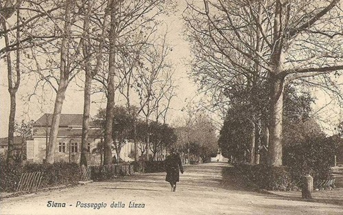
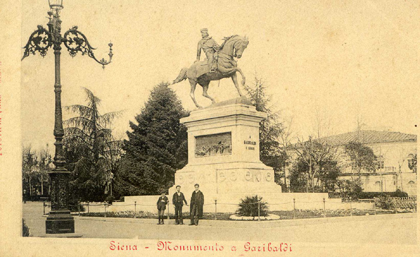

Il 12 gennaio 1778, sotto la direzione di Girolamo del Testa, iniziarono i lavori veri e propri per "spianare il prato della Lizza e di allargare lo stradone che conduce alla fortezza".
Nel dicembre dello stesso anno, dopo non poche difficoltà, la Lizza fu pareggiata e ridotta a viali e nel corso del 1779 i lavori vennero completati da Leopoldo Prucker, giardiniere del granduca, che riunì la Lizza alla Fortezza. Non più luogo di esercitazioni militari, ora i senesi avevano un giardino pubblico dove passeggiare a piedi e in carrozza.

(cliccare sulla cartolina per ingrandirla)
Lungo i suoi viali passeggiarono ospiti illustri quali Arthur Symons, Vernon Lee, Henry James e Paul Bourget che erano soliti prendere alloggio al Grand Hotel Royal (ingresso da via Camollia e affaccio sul Passeggio). Alla Lizza abitarono per alcuni anni le figlie di Alessandro Manzoni, Vittoria (moglie di Bista Giorgini, docente all’Università di Siena) e Matilde. In una lettera indirizzata proprio alla malaticcia Matilde – che in quella casa morirà a soli 25 anni – il padre Alessandro scriveva: “E corro anch’io col pensiero alla casa che guarda sulla Lizza, e se corro nell’andarci, non fo lo stesso nel partirne”. E ancora all’ombra di quei tigli ebbero modo di sostare Giovanni Marradi, Giovanni Comisso, Carlo Betocchi, Leonardo Sciascia.
I nostri vecchi amavano fare memoria di spettacoli e veglioni al Teatro della Lizza (già Teatro Montemaggi, dove, peraltro, Garibaldi l’11 agosto 1867 aveva tenuto un vibrante discorso), ricordavano certe serate trascorse al dancing del “Giardino dei Tigli” sorto successivamente tra i ruderi di quello stesso Teatro, il palco su cui ogni domenica si esibiva la banda cittadina, il fotografo ambulante che ritraeva soldatini di leva e fidanzatissime coppie orgogliose di mettere in posa amori che a quei tempi, pure quando finivano, erano comunque eterni.

Teatro della Lizza
Su tutto questo piccolo mondo teneramente provinciale, a volte perfino un po’ mondano e pretenzioso, si stagliava Lui, Giuseppe Garibaldi, l’Eroe dei due Mondi, che dall’alto del suo destriero ribadiva il mito di se stesso e di una storia collettiva. Monumento, dunque, ad un’idea di patria, di mondo, di progresso sociale.
Ma la realizzazione di quella statua equestre che tutt’oggi, da dietro il logorio del tempo, proclama l’essenziale dedica: “A Garibaldi i senesi”, non fu cosa semplice. Infatti, se tempestiva risultò la volontà del Consiglio comunale nel voler onorare in questo modo l’Eroe (decisione presa solo cinque giorni dopo la sua morte avvenuta il 2 giugno 1882), non altrettanto celere fu la messa in opera del monumento che il Comune intendeva allora collocare “nell’arcata centrale del porticato di Piazza Indipendenza o in altro luogo”.
La Società di Volontari e la Fratellanza Militare polemizzarono subito per i criteri con cui era stato formato l’apposito comitato, presieduto da Tiberio Sergardi (della stessa famiglia di quel Tommaso Sergardi che era stato sindaco quando Garibaldi nel 1867 aveva visitato Siena, accogliendolo in modo piuttosto freddo). Le due associazioni minacciarono di erigere il monumento per loro autonoma iniziativa, e tanto per dimostrare che facevano sul serio scoprirono le due lapidi poste sulla facciata dell’Albergo “Aquila Nera” e della casa di Ruggero Barni in Camollia (luoghi in cui Garibaldi aveva soggiornato in occasione della sua visita senese).
Ugualmente accese furono le discussioni su quale potesse essere la migliore ubicazione del monumento. Si ipotizzò piazza Tolomei (ma ritenuta troppo piccola e già impicciata dalla colonna che sorregge la lupa), piazza Pianigiani (spazio non sufficientemente idoneo), piazza Santa Petronilla (troppo periferica), la Croce del Travaglio (proposta avanzata dall’intraprendente architetto Partini che per fare posto al monumento suggeriva di demolire addirittura l’angolo tra Banchi di Sopra e Banchi di Sotto, rendendo così, a suo dire, anche più sicure le due strade). Da ultimo fu deciso per la Lizza, anche se qualcuno insinuò che la scelta poteva apparire dettata più dall’esigenza di decorare i Giardini che dalla volontà di onorare l’Eroe.
Individuato il posto, si trattò, poi, di stabilire chi e come avrebbe dovuto eseguire l’opera. E su queste ulteriori discussioni trascorreranno altri anni. Si arriverà così al 1889, quando vengono presentate due proposte che rimetteranno in discussione anche la collocazione, tant’è che si parlerà di porre la statua nei pressi del Ponte di Romana, oppure in uno slargo da ricavare in via Garibaldi. Finalmente nel 1891, a seguito di concorso, viene affidata l’opera allo scultore Raffaello Romanelli che già aveva realizzato il monumento ai caduti di Curtatone e Montanara nell’atrio dell’Università.
Il monumento a Garibaldi, definitivamente destinato ai Giardini della Lizza, sarà dunque in bronzo (120 tonnellate) e verrà a costare 60.000 lire. Purtroppo fu un po’ tribolata anche la cerimonia inaugurale svoltasi il 20 settembre del 1896. Pioveva. Erano presenti le autorità, i superstiti dei Mille, alcuni rappresentanti delle Logge massoniche, diverse Società di Contrada ma non le Contrade in forma ufficiale, poiché l’Arcivescovo di Siena le aveva invitate a non partecipare all’iniziativa.

L’opera, oltre al fiero Generale a cavallo, richiama, sui lati del basamento, anche alcune scene e nomi di vittorie garibaldine (Montevideo, Sant’Antonio, Milazzo, Volturno, Varese, Monte Suello, Solferino, Bezzecca, Roma 1849, Aspromonte, Calatafimi, Dijon).
Sempre a causa del maltempo, il previsto palio che si doveva correre nell’occasione fu rinviato al 23 settembre. Vinse l‘Istrice con il fantino Celso Cianchi detto Montieri. E così Garibaldi, che bene aveva portato alla Lupa presenziando alla Carriera del 15 agosto 1867, se pur da morto, si fece portafortuna equanime per le due avversarie.

 ACCADDE OGGI
ACCADDE OGGI